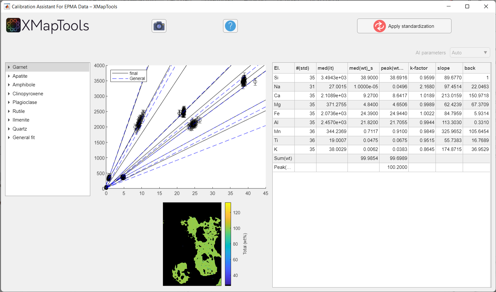
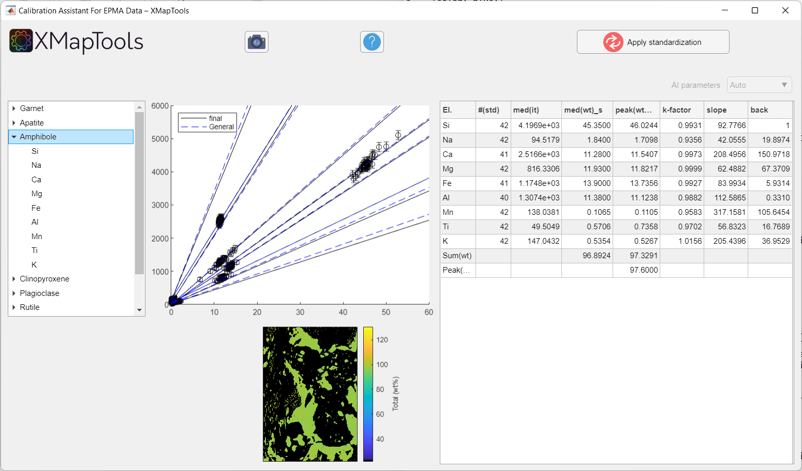
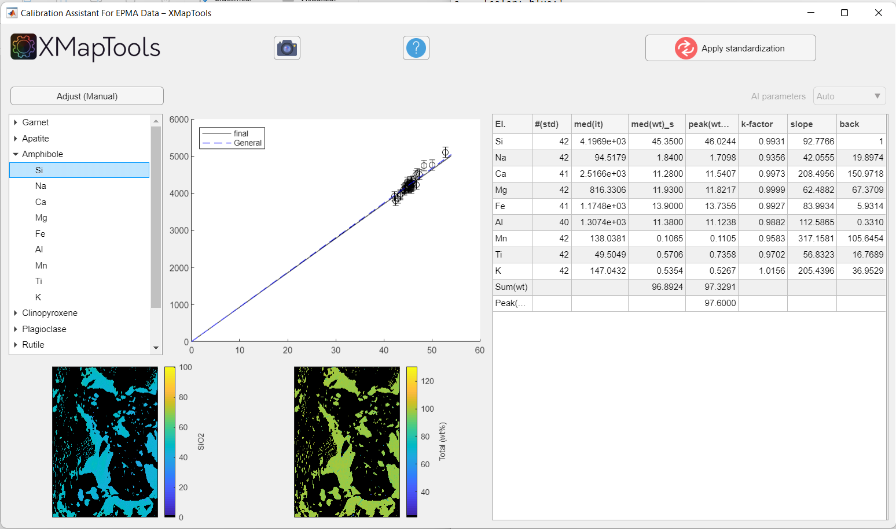
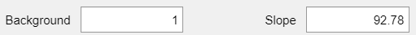

Help file version 02.12.2021 by M. Tedeschi & P. Lanari
Access XMapTools resources online
This part of XMapTools 4 is currently at level 2 of development (1, largely untested; 2, tested for a few cases; 3, tested and benchmarked; 4, publication quality).
Table of content
1. Strategy advantages and pitfalls
2. Procedure description:
Displaying calibration curves |
Adjusting a calibration curve |
Displaying results of the general fit
3. Apply calibration
4. Notes
4. References
This help file contains a description of the Calibration Assistant for EPMA Data which can be used to generate compositional maps from intensity data using spot analyses as internal standards. The generic procedure is described in De Andrade et al. (2005) and an advanced approach including a pseudo-background correction is described in Lanari et al. (2019).
The new approach implemented in XMapTools 4 provides a module for auto multi-phase calibration. Note that this is a preliminary version of the calibration assistant. We are expecting significant progress in the coming years once the algorithm is trained to face the most challenging situations. In the same time, please contact Pierre Lanari (pierre.lanari@geo.unibe.ch) if your case is not handled well by the algorithm.
An auto calibration was performed considering all spot analyses and all masks when you pressed the button Calibrate. The new algorithm performs first a general fit including all standards and then adjust the calibration for each mineral. All calibration curves, including those for the general fit are accessible via the tree menu.
If you press the button Apply Standardization, all calibrated maps, for each mineral as well as a merged map are created and sent back to XMapTools. It seems magic, but it is not so first make sure that you check the quality of the calibration curves determined by the auto function.
The auto function works if all minerals have been measured with at least a few spot analyses and if there is at least one mineral with a composition above 1 wt% for each element. If a mineral or other feature (e.g. fracture) have no spot analyses, the program extrapolates a calibration from the general fit, therefore "predicting" a composition. At this stage, this composition is likely to be wrong because of matrix effects are ignored!
If you close the Calibration Assistant window neither calibrated data or calibration settings are saved.
If you press Apply Standardisation all maps are sent to XMapTools.
The Calibration Assitant For EPMA Data opens after the button Calibrate in XMapTools was pressed.

Figure 1: Example of calibration for a clinopyroxene-garnet amphibolite metapelite the Brasília orogen (Brazil) published in Tedeschi et al. (2017). Note that the calibration curves for all the minerals are displayed when the window pops-up.Use the tree menu located on the left side to navigate through the list of minerals and elements and to display calibration curves.
if you select a mineral in the tree menu (Figure 1). A single map showing the sum of elements/oxides (total wt%) is displayed. The plot in the central part shows all calibration curves, for all the elements of the selected mineral. Some data are showed in a table.

Figure 2: Example of calibration when a mineral in selected. The calibration curves for a given mineral are all displayed.To display a specific calibration curve (for a given element), unfold the menu by clicking on the small arrow on the left side of the mineral name and select an element. The corresponding calibration curve is displayed as well as the correspondent quantitative map (oxide wt-%) (Figure 3).

Figure 3: Example of the 'Calibration Assitant For EPMA Data' window when an element of a given mineral phase in selected. By selecting an element the button 'Adjust (Manual)' appears on the top left. The calibration curve and the quantitative map for a given element are then displayed.When an element is selected the button Adjust appears above the tree menu.
Clicking on this button display two fields containing the values the values for background and slope:
Values can be changed manuall, by tapping new values in the corresponding field.
Press enter to calculate and display the new calibration curve on the plot (this operation can take a few seconds).
By selecting the General fit (last option in the tree menu, Figure 3), a plot with the calibration curves for all the elements are displayed.
No adjustment on the calibration curves in the general fit is possible. This fit is automatically performed first by the program and no longer used once the calibration of each mineral is achieved.
After checking each calibration curves and adjusting, if necessary, use the button Apply standardization  to generate the calibrated maps.
to generate the calibrated maps.
By applying the standardization, the option Quanti in the Primary Menu becomes available. There, the quantitative maps in element/oxide wt-% of each phase can be displayed.
The option Merged in the Primary Menu also becomes available after the standardization. A set of merged maps (i.e., quantitative maps in oxide wt-% for all the phases considered together) is automatically generated.
Red spots show outliers that are not considered in the calculation of the calibration curves.
By hoving the cursor on the images an image menu will appear on the upper right. This menu includes options to zoom, save and copy the images.